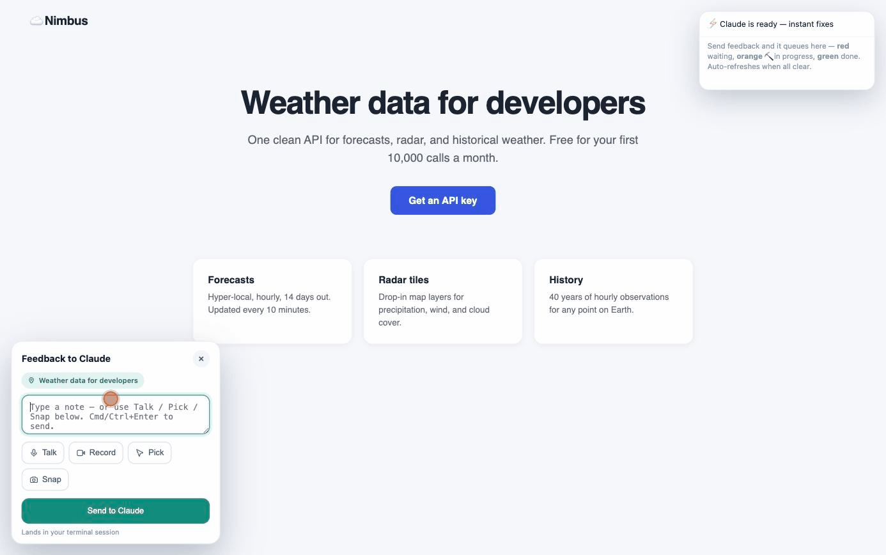

Yap at your UI. Watch Claude rebuild it live.

YapUI is a Claude Code skill that serves any HTML file over http://localhost, injects a feedback widget, and keeps a resident, pre-warmed Claude agent listening. open file.html is a dead end — file:// blocks the mic and screen capture, and every change means typing it all back into the terminal. YapUI replaces that round-trip with a live, two-way conversation on top of your page.
# one command (via skills.sh) — or pick another option in the README npx skills add tatendaz/yapui # git clone, as a personal Claude Code skill git clone https://github.com/Tatendaz/yapui ~/.claude/skills/yapui # or as a Claude Code plugin /plugin marketplace add Tatendaz/yapui
Then just ask Claude to "preview index.html". Plain Node, zero npm dependencies, MIT. Everything runs locally — your HTML, notes, recordings, and screenshots never leave your machine.